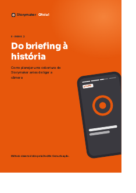
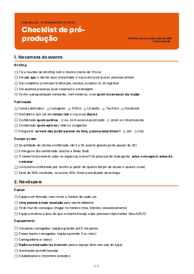
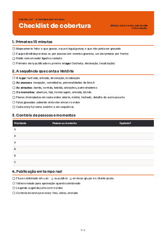
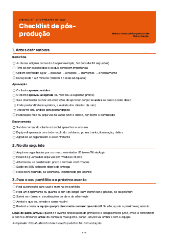
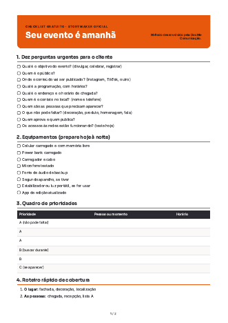
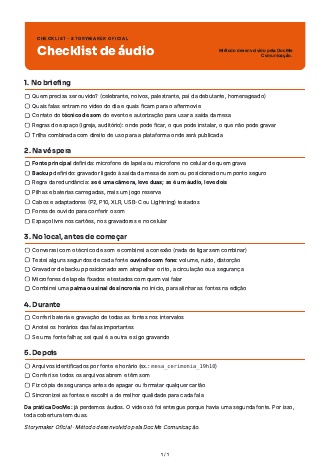
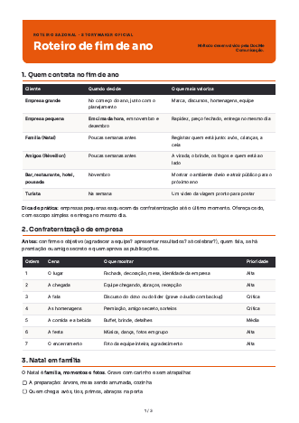
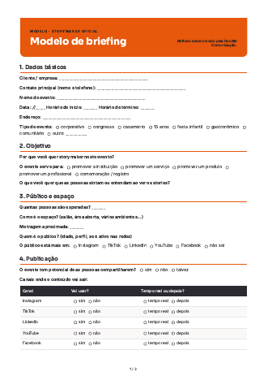
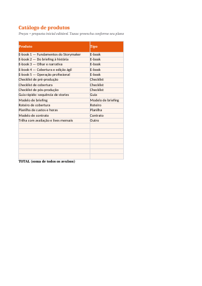
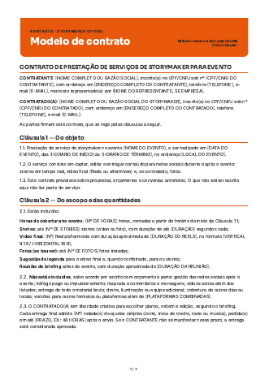

Fundamentos do Storymaker
A produzir
E-book 1 — Fundamentos do Storymaker
- Formato
- PDF A5 ilustrado
- Páginas
- 24 a 28 (meta)
Abre com a artesã da flor no cachepô (nível básico). Sumário pronto.
R$ 39
Storymaker Oficial · Método desenvolvido pela DocMe Comunicação.
Do mais curto ao mais completo: quanto maior e mais denso o material, maior o preço. E-books a partir de 20 páginas, todos ilustrados.
Abre com a artesã da flor no cachepô (nível básico). Sumário pronto.
R$ 39

16 capítulos, 10 ilustrações. Faltam fotos e prints da DocMe nos espaços marcados.
R$ 99
Leitura do evento, planos, sequência. Cases: feira de sustentabilidade, festas tradicionais, ações beneficentes.
R$ 69
Tempo real, CapCut, Reels x aftermovie. Cases: congresso em São Paulo, workshop de dois dias, evento nacional.
R$ 69
Proposta, preço, custos, contrato, portfólio. Usa a planilha e o contrato.
R$ 99

Antes do evento, véspera e chegada ao local.
R$ 9

Durante o evento: sequência, pessoas A/B/C, controle foto/vídeo/enviado e o que fazer quando algo sai do plano.
R$ 9

Aprovação de vídeo e legenda, entrega, saldo e a revisão: a equipe coube no valor?
R$ 9

Isca de cadastro: dez perguntas urgentes, prioridades, equipamentos e modelos de mensagem. Capta o e-mail de quem está prestes a pegar um trabalho.
Grátis

Fonte principal, backup, teste de som e cópia de segurança. Da prática DocMe: sempre duas fontes.
R$ 9

Confraternização, Natal, Réveillon e Réveillon em bares e hotéis. Oferta de dezembro; fora do Pacote Completo.
R$ 19
Lugar, pessoas, atrações, momentos, com exemplos reais.
R$ 19

Formulário de 10 seções para a reunião com o cliente.
R$ 19
Modelo baseado no roteiro real de um congresso em São Paulo, com campos em branco.
R$ 19

6 abas: custos, pacotes básico x completo, equipe e margem, hora extra.
R$ 49

11 cláusulas para storymaker. Revisar com os modelos da DocMe e um advogado.
R$ 39
Avaliação do vídeo e do portfólio e uma live por mês com a equipe DocMe para casos reais. A vivência ao vivo.
R$ 297
Venda para agências e empresas: o método DocMe aplicado à equipe do cliente. Preço a definir.
Sob consulta
checklist de pré-produção, modelo de contrato, planilha de custos e e-book 2 (os 4 prontos)
avulsos somam R$ 196
R$ 127
economia de R$ 69 (35%)
os 14 produtos digitais + trilha com avaliação e lives mensais por 12 meses
avulsos somam R$ 853
R$ 697
economia de R$ 156 (18%)
Preços são proposta inicial para validar. Capas tracejadas = produto ainda a produzir. O desconto dos pacotes é sempre calculado sobre os preços avulsos reais.